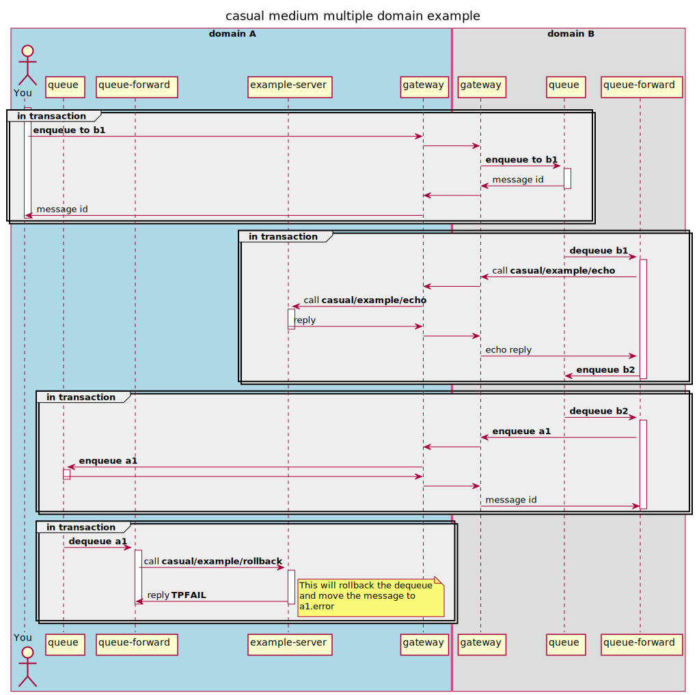

multiple domain example¶
objective¶
Explore:
queue
enqueue
dequeue
forward-service
forward-queue
The abillity of casual to discover resources in remote domains.
We’ll set up two domains, A and B.
From within A we’ll enqueue a message to a queue in B.
In B, a queue-service forward will dequeue the message and call a service in A and the reply is enqueued in another queue in B.
in B, a queue-queue forward will dequeue the reply and enqueue it at a queue in A. A queue service forward dequeues the message and calls a service that will abort the transaction, hence the message is moved to the corresponding error queue.
diagram¶
A simplified sequence diagram on what’s going on (discovery and transaction related activity is omitted)

prerequisites¶
See domain example
create domains¶
Create a directory where you want your domains to “live”.
In production you probably want to have a dedicated user for each domain and just use the “domain-user” home directory as the domain root
The following will be used in this example.
$ mkdir -p $HOME/casual/example/domain/multiple
Copy the domains setup from the example:
$ cp -r $CASUAL_HOME/documentation/example/domain/multiple/* $HOME/casual/example/domain/multiple/
configuration¶
Each domain has it’s configuration in $CASUAL_DOMAIN_HOME/configuration/domain.yaml. In our example these will be located at:
$HOME/casual/example/domain/multiple/A/configuration/domain.yaml$HOME/casual/example/domain/multiple/B/configuration/domain.yaml
The environment variable CASUAL_DOMAIN_HOME is the only thing that dictates which domain you’re using and working with
If you chose another base directore for this example, please update the following files so they corresponds with your choice
start A¶
In the terminal for A.
prepare¶
Make sure the required environment settings are sourced.
You only have to do this once.
A$ cd $HOME/casual/example/domain/multiple/A
A$ source domain.env
boot¶
We provide our configuration for the domain:
A$ casual domain --boot configuration/domain.yaml
start B¶
In the terminal for B.
prepare¶
B$ cd $HOME/casual/example/domain/multiple/B
B$ source domain.env
boot¶
We provide our configuration for the domain:
B$ casual domain --boot configuration/domain.yaml
interact with the setup¶
current state¶
View current state in the two domains.
domain A¶
List connections:
A$ casual gateway --list-connections
name id group bound local peer created
---- -------------------------------- -------- ----- --------------- --------------- --------------------------------
B c92c58fbcf7242139446e1618a2eec0f outbound out 127.0.0.1:61973 127.0.0.1:7772 2021-10-23T13:16:54.286028+02:00
B c92c58fbcf7242139446e1618a2eec0f inbound in 127.0.0.1:7771 127.0.0.1:61972 2021-10-23T13:16:52.289561+02:00
We have one inbound and one outbound connection to B.
List services:
A$ casual service --list-services
name category mode timeout contract I C AT min max P PAT RI RC last
------------------------------------- -------- ---- -------- -------- - - -------- -------- -------- - -------- -- -- ----
casual/example/advertised/echo example join 0.000000 linger 1 0 0.000000 0.000000 0.000000 0 0.000000 0 0 -
casual/example/conversation example join 0.000000 linger 1 0 0.000000 0.000000 0.000000 0 0.000000 0 0 -
casual/example/domain/echo/A example join 0.000000 linger 1 0 0.000000 0.000000 0.000000 0 0.000000 0 0 -
casual/example/domain/name example join 0.000000 linger 1 0 0.000000 0.000000 0.000000 0 0.000000 0 0 -
casual/example/echo example join 0.000000 linger 1 0 0.000000 0.000000 0.000000 0 0.000000 0 0 -
casual/example/error/system example join 0.000000 linger 1 0 0.000000 0.000000 0.000000 0 0.000000 0 0 -
casual/example/forward example join 0.000000 linger 1 0 0.000000 0.000000 0.000000 0 0.000000 0 0 -
casual/example/forward/echo example auto 0.000000 linger 1 0 0.000000 0.000000 0.000000 0 0.000000 0 0 -
casual/example/forward/join/echo example join 0.000000 linger 1 0 0.000000 0.000000 0.000000 0 0.000000 0 0 -
casual/example/lowercase example join 0.000000 linger 1 0 0.000000 0.000000 0.000000 0 0.000000 0 0 -
casual/example/rollback example join 0.000000 linger 1 0 0.000000 0.000000 0.000000 0 0.000000 0 0 -
casual/example/sink example join 0.000000 linger 1 0 0.000000 0.000000 0.000000 0 0.000000 0 0 -
casual/example/sleep example join 0.000000 linger 1 0 0.000000 0.000000 0.000000 0 0.000000 0 0 -
casual/example/terminate example join 0.000000 linger 1 0 0.000000 0.000000 0.000000 0 0.000000 0 0 -
casual/example/uppercase example join 0.000000 linger 1 0 0.000000 0.000000 0.000000 0 0.000000 0 0 -
casual/example/work example join 0.000000 linger 1 0 0.000000 0.000000 0.000000 0 0.000000 0 0 -
casual/example/echo and casual/example/rollback is advertised from one local instance, and no one has requested the services yet.
List queue information:
A$ casual queue --list-queues
name group rc rd count size avg EQ DQ UC last
-------- ----- -- -------- ----- ---- --- -- -- -- ----
a1 A 0 0.000000 0 0 0 0 0 0 -
a2 A 0 0.000000 0 0 0 0 0 0 -
a1.error A 0 0.000000 0 0 0 0 0 0 -
a2.error A 0 0.000000 0 0 0 0 0 0 -
$ casual queue --list-forward-services
alias group source target reply delay CI I commits rollbacks last
----- --------- ------ ----------------------- ----- ----- -- - ------- --------- ----
a1 forward-A a1 casual/example/rollback - - 1 1 0 0 -
domain B¶
List connections:
B$ casual gateway --list-connections
name id group bound local peer created
---- -------------------------------- -------- ----- --------------- --------------- --------------------------------
A 1beb85a07678410aa39de492db9f292f outbound out 127.0.0.1:61972 127.0.0.1:7771 2021-10-23T13:16:52.289521+02:00
A 1beb85a07678410aa39de492db9f292f inbound in 127.0.0.1:7772 127.0.0.1:61973 2021-10-23T13:16:54.285984+02:00
We have one inbound and one outbound connection to A.
List services:
B$ casual service --list-services
name category mode timeout contract I C AT min max P PAT RI RC last
---- -------- ---- ------- -------- - - -- --- --- - --- -- -- ----
casual/example/echo is not yet known in this domain.
List queue information:
B$ casual queue --list-queues
name group rc rd count size avg EQ DQ UC last
-------- ----- -- -------- ----- ---- --- -- -- -- ----
b1 B 0 0.000000 0 0 0 0 0 0 -
b2 B 0 0.000000 0 0 0 0 0 0 -
b3 B 0 0.000000 0 0 0 0 0 0 -
b1.error B 0 0.000000 0 0 0 0 0 0 -
b2.error B 0 0.000000 0 0 0 0 0 0 -
b3.error B 0 0.000000 0 0 0 0 0 0 -
$ casual queue --list-forward-services
alias group source target reply delay CI I commits rollbacks last
----- --------- ------ ------------------- ----- -------- -- - ------- --------- ----
b1 forward-B b1 casual/example/echo b2 0.000000 1 1 0 0 -
$ casual queue --list-forward-queues
alias group source target delay CI I commits rollbacks last
----- --------- ------ ------ -------- -- - ------- --------- ----
b2 forward-B b2 a1 0.000000 0 0 0 0 -
enqueue a message¶
In A, enqueue some characters to b1 that is located in B
A$ echo "test" | casual buffer --compose | casual queue --enqueue b1
bec3b4b3cccd4f3b89faee970518ab7d
The message should be enqueued to a1 and then dequeued and rollbacked, hence end up in a1.error pretty much directly.
A$ casual queue --list-queues
name group rc rd count size avg EQ DQ UC last
-------- ----- -- -------- ----- ---- --- -- -- -- --------------------------------
a1 A 0 0.000000 0 0 0 1 1 0 2021-10-24T17:38:48.356025+02:00
a2 A 0 0.000000 0 0 0 0 0 0 -
a1.error A 0 0.000000 1 5 5 1 0 0 2021-10-24T17:38:48.356025+02:00
a2.error A 0 0.000000 0 0 0 0 0 0 -
The service `casual/example/echo` should be requested once (the call from remote `B`).
The service `casual/example/rollback` should be requested once from the forward in this domain.
A$ casual service –list-services name category mode timeout contract I C AT min max P PAT RI RC last
casual/example/advertised/echo example join 0.000000 linger 1 0 0.000000 0.000000 0.000000 0 0.000000 0 0 -
casual/example/conversation example join 0.000000 linger 1 0 0.000000 0.000000 0.000000 0 0.000000 0 0 -
casual/example/domain/echo/A example join 0.000000 linger 1 0 0.000000 0.000000 0.000000 0 0.000000 0 0 -
casual/example/domain/name example join 0.000000 linger 1 0 0.000000 0.000000 0.000000 0 0.000000 0 0 -
casual/example/echo example join 0.000000 linger 1 1 0.000090 0.000090 0.000090 0 0.000000 0 0 2021-10-24T17:38:48.354110+02:00
casual/example/error/system example join 0.000000 linger 1 0 0.000000 0.000000 0.000000 0 0.000000 0 0 -
casual/example/forward example join 0.000000 linger 1 0 0.000000 0.000000 0.000000 0 0.000000 0 0 -
casual/example/forward/echo example auto 0.000000 linger 1 0 0.000000 0.000000 0.000000 0 0.000000 0 0 -
casual/example/forward/join/echo example join 0.000000 linger 1 0 0.000000 0.000000 0.000000 0 0.000000 0 0 -
casual/example/lowercase example join 0.000000 linger 1 0 0.000000 0.000000 0.000000 0 0.000000 0 0 -
casual/example/rollback example join 0.000000 linger 1 1 0.000033 0.000033 0.000033 0 0.000000 0 0 2021-10-24T17:38:48.357365+02:00
casual/example/sink example join 0.000000 linger 1 0 0.000000 0.000000 0.000000 0 0.000000 0 0 -
casual/example/sleep example join 0.000000 linger 1 0 0.000000 0.000000 0.000000 0 0.000000 0 0 -
casual/example/terminate example join 0.000000 linger 1 0 0.000000 0.000000 0.000000 0 0.000000 0 0 -
casual/example/uppercase example join 0.000000 linger 1 0 0.000000 0.000000 0.000000 0 0.000000 0 0 -
casual/example/work example join 0.000000 linger 1 0 0.000000 0.000000 0.000000 0 0.000000 0 0 -
In `B`, `casual/example/echo` should be known with no local instances:
B$ casual service –list-services name category mode timeout contract I C AT min max P PAT RI RC last
casual/example/echo example join 0.000000 linger 0 1 0.000648 0.000648 0.000648 0 0.000000 1 1 2021-10-24T17:38:48.354246+02:00